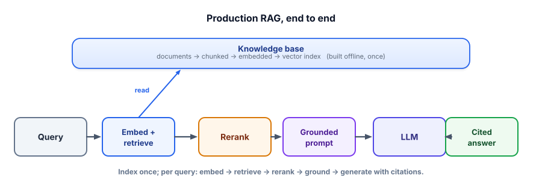

Capstone: a RAG assistant over your docs
Your flagship project: a grounded, cited question-answering assistant over documents you provide, with a real evaluation. It runs entirely free and local, demonstrates Tracks 1–8 in one artifact, and is the single best thing to show in an interview. Build it, and you can talk about every topic in this course from experience.
What you’re building
A complete RAG system: ingest your documents, answer questions grounded in them with citations, abstain when the answer isn’t there, and measure retrieval and answer quality. Everything uses the free stack from this course — Ollama (local LLM), sentence-transformers / Chroma (embeddings + vector DB) — so it costs $0 and runs on your machine or free Colab.

Install Ollama from ollama.com and run ollama pull llama3.2. Then:
$ pip install chromadb ollama
# Chroma's default embedder (all-MiniLM-L6-v2) is free and downloads automatically.
# Put a few .txt/.md files in a ./docs folder (your notes, a manual, FAQs…).Step 1 — Ingest: chunk, embed, store
Read your docs, split into overlapping chunks with metadata, and store them in a vector DB (Track 3.2–3.4).
import os, glob, chromadb
def chunk(text, size=120, overlap=20):
words = text.split()
step = size - overlap
out = []
for i in range(0, len(words), step):
c = " ".join(words[i:i + size])
if c: out.append(c)
if i + size >= len(words): break
return out
client = chromadb.PersistentClient(path="./store")
col = client.get_or_create_collection("docs") # free default embedder
for path in glob.glob("docs/**/*.*", recursive=True):
text = open(path, encoding="utf-8", errors="ignore").read()
for j, ch in enumerate(chunk(text)):
col.add(ids=[f"{path}#{j}"], documents=[ch],
metadatas=[{"source": os.path.basename(path), "chunk": j}])
print("indexed", col.count(), "chunks")Step 2 — Answer: retrieve, ground, cite
Retrieve the most relevant chunks, build a grounded prompt that forbids guessing and requires citations (Track 3.7), and generate with a free local model.
import chromadb, ollama
col = chromadb.PersistentClient(path="./store").get_collection("docs")
def answer(question, k=4):
res = col.query(query_texts=[question], n_results=k)
chunks = res["documents"][0]
sources = [m["source"] for m in res["metadatas"][0]]
context = "\n".join(f"[{i+1}] {c}" for i, c in enumerate(chunks))
prompt = f"""Answer using ONLY the context. Cite sources as [n] after each claim.
If the answer is not in the context, reply exactly: "I don't know based on the documents."
Context:
{context}
Question: {question}"""
out = ollama.chat(model="llama3.2",
messages=[{"role": "user", "content": prompt}],
options={"temperature": 0})["message"]["content"]
return {"answer": out, "sources": sources}
if __name__ == "__main__":
while True:
q = input("\nQ: ")
r = answer(q)
print(r["answer"], "\n— sources:", set(r["sources"]))Step 3 — Evaluate (the part that wins)
Build a small golden set and measure retrieval (does the right source appear?) and grounding (does it abstain when it should?). This is what separates your project from everyone else’s (Track 6, Track 15.5).
from rag import answer
golden = [
{"q": "What is the refund window?", "must_include": "30", "source": "returns.md"},
{"q": "How long is the warranty?", "must_include": "year", "source": "warranty.md"},
{"q": "Do you ship to the Moon?", "must_include": "don't know", "source": None}, # must abstain
# ... add ~20 real questions, including edge cases ...
]
retr_hit, ans_ok = 0, 0
for ex in golden:
r = answer(ex["q"])
if ex["source"] is None or ex["source"] in r["sources"]:
retr_hit += 1 # retrieval: right source present (or N/A)
if ex["must_include"].lower() in r["answer"].lower():
ans_ok += 1 # answer: contains the expected fact / abstains
n = len(golden)
print(f"retrieval hit-rate: {retr_hit/n:.2f} answer correctness: {ans_ok/n:.2f}")
# Now change ONE thing (chunk size, k, model) and re-run to see if the numbers improve.- Ship the eval. The
goldenset + the two numbers are your differentiator — almost no one includes them. - Abstain honestly. The “I don’t know” path proves you handle the unanswerable case (no hallucination).
- Cite sources. Show which documents each answer came from — trust through traceability.
- Write a README with your design decisions (chunk size, k, why RAG), the eval results, and “what I’d do next.”
- It’s $0 and runnable from a clean clone — any reviewer can try it.
1. Add reranking (Track 3.5): retrieve 20, rerank to 4 with a free CrossEncoder. Measure the change in answer correctness.
2. Add hybrid search (Track 3.6): blend BM25 with the vector search for queries containing exact terms/codes.
3. Add caching (Track 8.3) and streaming (Track 8.2) for a snappier, cheaper UX.
4. Add an LLM-as-judge faithfulness score (Track 6.3) to your eval, not just keyword matching.
5. Add guardrails (Track 7): fence the question, validate the output, redact PII from logs.
▸ How to talk about it in an interview
Anchor every answer to this project. Fundamentals: “I chunk into ~120-word pieces with overlap because tokens are the unit of retrieval and boundary ideas get lost otherwise.” RAG: “I separate retrieval and generation metrics so I know which half to fix.” System design: “Here’s how I’d scale it — a managed vector DB with ANN, hybrid + rerank, caching, and per-tenant filtering.” Evals: “I built a golden set and gate changes on it.” Serving: “At volume I’d cache and route easy queries to a smaller model.” Behavioral: “The trickiest bug was a retrieval miss from over-large chunks — I traced it, fixed chunking, and added an eval case so it can’t recur.” One project, every round (Track 15.4).
A reviewer compares two RAG take-homes: yours (works, plus a 25-example eval with results and a README explaining decisions) and another (a slicker UI, no eval). Who’s likely ranked higher, and why?
You have a flagship project that answers every interview round. Next, give a model the ability to act. Next capstone: a tool-using agent.